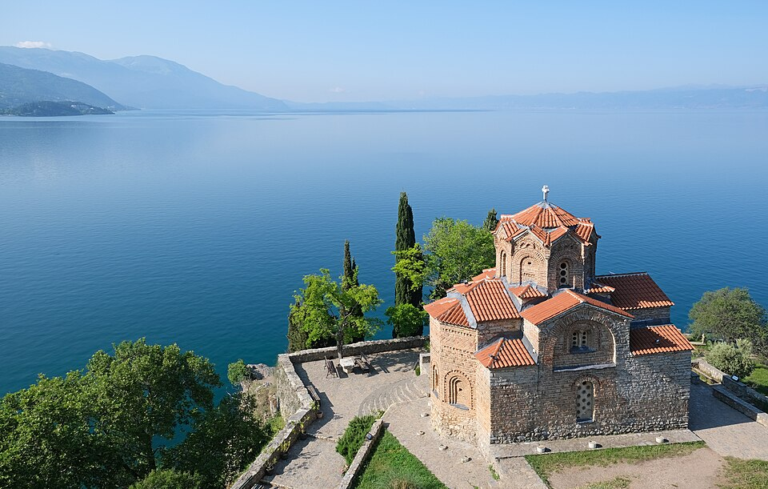
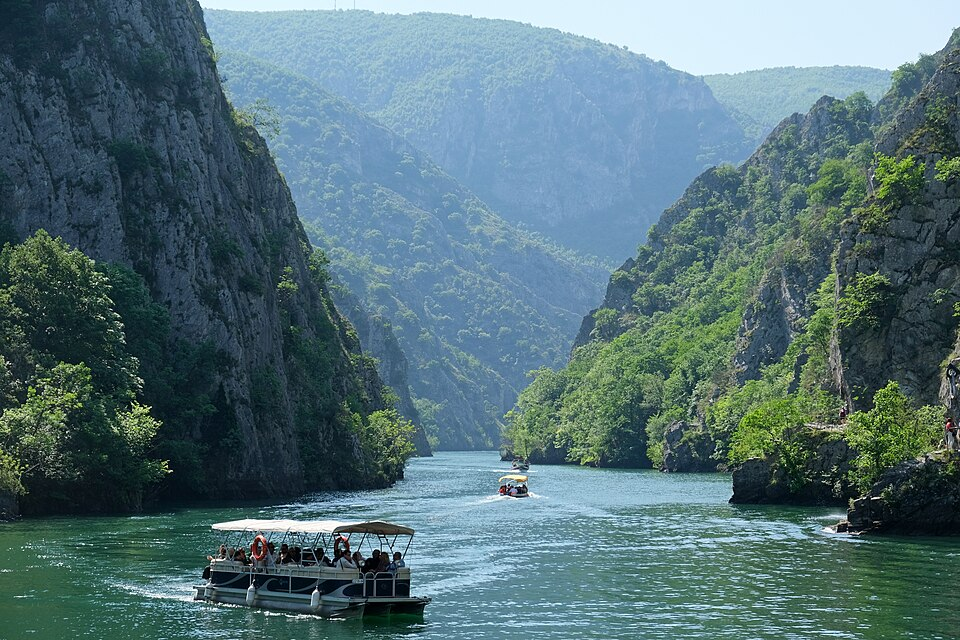
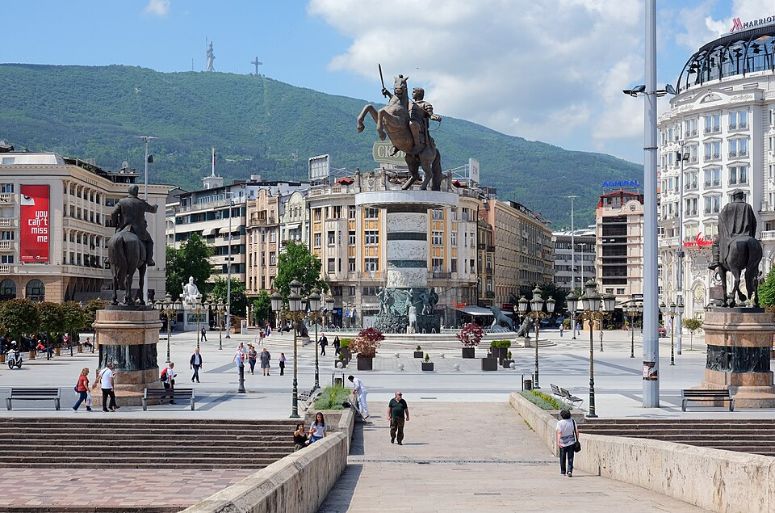
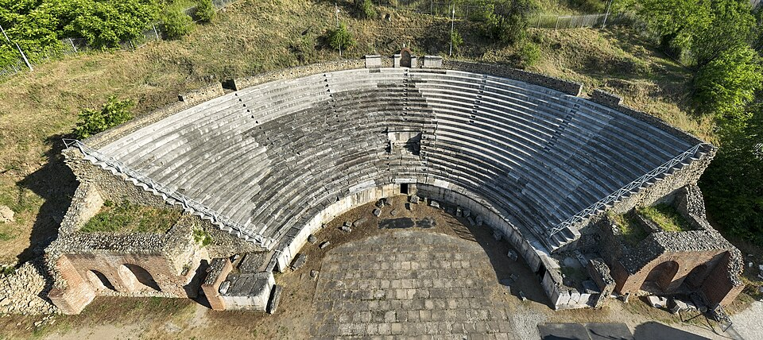

North Macedonia북마케도니아 Република Северна Македонија
오흐리드호와 고대 유산, 발칸 내륙 제조업의 교차점
- Capital
- 스코페 (Скопје)
- Language
- 마케도니아어 및 알바니아어
- Currency
- 마케도니아 데나르 (MKD)

오흐리드 호수 카네오 성 요한 교회St. John at Kaneo, Lake Ohrid
마트카 협곡Matka Canyon
스코페 마케도니아 광장Macedonia Square, Skopje
헤라클레아 링케스티스 고대 극장Theatre of Heraclea LyncestisExplore North Macedonia
북마케도니아 더 알아보기
북마케도니아는 발칸반도 내륙의 다언어 국가로 스코페의 옛 시장과 현대 도시개발, 오흐리드의 호수·중세 수도원, 샤르산맥과 펠리스테르의 산악 자연이 공존한다. 2019년 프레스파 합의에 따른 국호 변경 이후 북마케도니아라는 공식 명칭을 사용한다. 산업적으로는 유럽 가치사슬에 연결된 자동차 배선·촉매·제조업과 농식품·관광이 중요한 역할을 한다.

Latest updates
북마케도니아 최근 뉴스
-
불가리아 트라키아 고속도로 사고 수사 계속·총리 프랑스 안보 구상 조건부 지지, 북마케도니아는 알타은행 논란
BTA에 따르면 수사당국은 안개 속 트라키아 고속도로 연쇄 추돌 수사를 위해 통행료 카메라 영상을 요청했고, 부상자 16명은 안정적인 상태입니다.
원문 BTA – 헤드라인 목록(11월 13일) 외 2건
-
EU 보고서 “몬테네그로 진전 평가, 다수 발칸국 정체”…프랑스 선거가 확대에 변수라는 논평(배경, 11/4~5)
발칸인사이트는 11월 4일 EU가 몬테네그로의 개혁 진전을 평가하고 발칸 상당 지역의 정체를 안타깝게 여긴다고 제목으로 전했습니다. 검색 결과 요약에는 보스니아·북마케도니아·코소보·세르비아의 개혁 부진이 언급됐습니다. 본문은 열어 확인하지 못했습니다.
-
EU 확대 보고서 후속…몬테네그로 내년 6월 조약 서명 목표, 알바니아는 시위 참가자 83명 벌금
유럽웨스턴발칸스(11월 6일)에 따르면 EU 집행위 확대 패키지는 몬테네그로·알바니아·몰도바·우크라이나를 선두주자로 분류했습니다. 마르타 코스 집행위원은 몬테네그로를 선두 중의 선두라고 평가했고, 나머지 협상 분야가 11~12월에 닫히면 2027년 봄 조약 문안을 마무리해 6월에 서명한다는 일정입니다. 크로아티아는 양자 현안 6건 해결을 요구하고 있습니다.